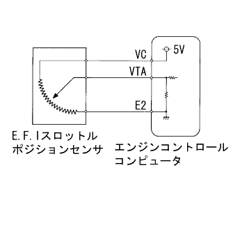
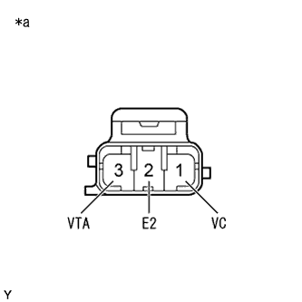
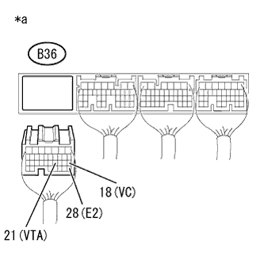

DTC P0120/41 スロットルセンサ系統 |
DTC P0121/41 スロットルセンサレンジ外れ |
DTC P0122/41 スロットルセンサ断線(Low) |
DTC P0123/41 スロットルセンサ断線(High) |
|  |
| DTC No. SAE/TCCS | DTC検出条件
| 点検部位 |
|---|---|---|
| P0120/41 |
|
|
| P0121/41 |
|
|
| P0122/41 |
|
|
| P0123/41 |
|
|
| 手順1 | TaSCANデータ読み取り（スロットルセンサNo.1電圧比） |
SST(TaSCAN)をDLC3に接続する。
IG ONにする。
SST(TaSCAN)の画面表示に従い、[ECUデータモニター]-[スロットルセンサNo.1電圧比]を選択する。
アクセルペダル全閉時の[スロットルセンサNo.1電圧比]を読み取る。
アクセルペダル全開時の[スロットルセンサNo.1電圧比]を読み取る。
| スロットルセンサNo.1電圧比 | 飛び先 | |
|---|---|---|
| アクセルペダル全閉時 (IG ON) | アクセルペダル全開時 (IG ON) | |
| 0% | 0% | A |
| 11 to 13% | 70 to 74% | B |
| 約100% | 約100% | C |
|
| ||||
|
| ||||
| A | |
| 手順2 | E.F.I. スロットル ポジション センサ点検 |
|  |
E.F.I.スロットルポジションセンサのコネクターB3を切り離す。
SST(トヨタエレクトリカルテスター)を使用して、端子間の抵抗を測定する。
| 点検端子 | 点検条件 | 基準値 |
|---|---|---|
| 1 (VC) - 2 (E2) | - | 2.5 to 5.9 kΩ |
| 3 (VTA) - 2 (E2) | アクセルペダル全閉時 | 0.2 to 5.7 kΩ |
| 3 (VTA) - 2 (E2) | アクセルペダル全開時 | 2.0 to 10.2 kΩ |
| *a | コネクター非接続状態 (E.F.I.スロットルポジションセンサ) |
|
| ||||
| OK | |
| 手順3 | ワイヤハーネスおよびコネクター点検（エンジンコントロールコンピュータ - E.F.I.スロットルポジションセンサ） |
参照。|  |
エンジンコントロールコンピュータのコネクターB36を切り離す。
SST(トヨタエレクトリカルテスター)を使用して、端子間の抵抗を測定する。(端子配列は参照)
| 点検端子 | 点検条件 | 基準値 |
|---|---|---|
| B36-18 (VC) - B36-28 (E2) | - | 2.5 to 5.9 kΩ |
| B36-21 (VTA) - B36-28 (E2) | アクセルペダル全閉時 | 0.2 to 5.7 kΩ |
| B36-21 (VTA) - B36-28 (E2) | アクセルペダル全開時 | 2.0 to 10.2 kΩ |
| 点検端子 | 点検条件 | 基準値 |
|---|---|---|
| B36-18 (VC) - 他の端子間およびボデーアース間 | 常時 | 10 kΩ以上 |
| B36-21 (VTA) - 他の端子間およびボデーアース間 | 常時 | 10 kΩ以上 |
| *a | 車両ワイヤハーネスコネクター後側 (エンジンコントロールコンピュータ接続コネクター) |
|
| ||||
| OK | ||
| ||
| 手順4 | E.F.I. スロットル ポジション センサ点検 |
E.F.I.スロットルポジションセンサのコネクターB3を切り離す。
SST(トヨタエレクトリカルテスター)を使用して、端子間の抵抗を測定する。
| 点検端子 | 点検条件 | 基準値 |
|---|---|---|
| 1 (VC) - 2 (E2) | - | 2.5 to 5.9 kΩ |
| 3 (VTA) - 2 (E2) | アクセルペダル全閉時 | 0.2 to 5.7 kΩ |
| 3 (VTA) - 2 (E2) | アクセルペダル全開時 | 2.0 to 10.2 kΩ |
| *a | コネクター非接続状態 (E.F.I.スロットルポジションセンサ) |
|
| ||||
| OK | |
| 手順5 | ワイヤハーネスおよびコネクター点検（エンジンコントロールコンピュータ - E.F.I.スロットルポジションセンサ） |
参照。エンジンコントロールコンピュータのコネクターB36を切り離す。
E.F.I.スロットルポジションセンサのコネクターB3を切り離す。
SST(トヨタエレクトリカルテスター)を使用して、端子間の抵抗を測定する。(端子配列は参照)
| 点検端子 | 点検条件 | 基準値 |
|---|---|---|
| B36-18 (VC) - B3-1 (VC) | 常時 | 1 Ω未満 |
| B36-21 (VTA) - B3-3 (VTA) | 常時 | 1 Ω未満 |
| B36-28 (E2) - B3-2 (E2) | 常時 | 1 Ω未満 |
| 点検端子 | 点検条件 | 基準値 |
|---|---|---|
| B36-18 (VC)およびB3-1 (VC) - 他の端子間およびボデーアース間 | 常時 | 10 kΩ以上 |
| B36-21 (VTA)およびB3-3 (VTA) - 他の端子間およびボデーアース間 | 常時 | 10 kΩ以上 |
|
| ||||
| OK | ||
| ||